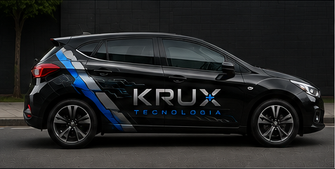
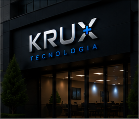
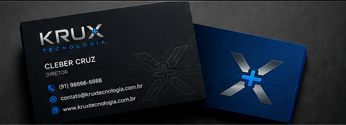
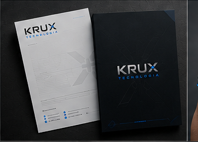
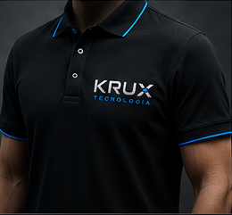
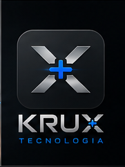

Conectamos pessoas, processos e tecnologia.
Conceito
Força, precisão e conexão para a TI da sua empresa.
KRUX é o ponto de encontro entre pessoas, sistemas e soluções. Uma marca criada para traduzir tecnologia com propósito, performance e confiança.
Soluções com objetivo, direção e clareza.
Eficiência e inteligência em cada entrega.
Sempre à frente, evoluindo com o cliente.






A Fortis Informática renasce com uma marca mais forte, proprietária e preparada para crescer.
KRUX Tecnologia é suporte, implantação e sustentação para empresas que precisam de TI funcionando com clareza, estabilidade e atendimento consultivo.Serviços
Da rotina do escritório ao ambiente crítico.
O atendimento pode começar em uma urgência, mas a entrega mira continuidade, documentação, prevenção e melhoria do ambiente.
Suporte técnico consultivo
Diagnóstico, atendimento remoto ou presencial, correção de falhas, configurações, backup, impressoras, redes e estações.
Sustentação de ambientes
Monitoramento, troubleshooting, Windows Server, IIS, rotinas operacionais, incidentes recorrentes e estabilização.
Implantação de sistemas e ERP
Mapeamento de processos, parametrização, treinamento, acompanhamento de cronograma e suporte na virada.
SQL Server e dados
Consultas, scripts, validações, apoio a relatórios, análise de inconsistências e melhoria de rotinas.
APIs, WebServices e integrações
Apoio para conectar sistemas, validar fluxos, investigar erros de comunicação e documentar pontos críticos.
TI para empresas pequenas
Planos de atendimento, organização de ativos, segurança básica, continuidade e orientação para decisão.
Experiência por trás da operação
Mais que resolver máquina: entender impacto no negócio.
A KRUX é conduzida por Cleber Cassemiro da Cruz, profissional de TI em Belém/PA com mais de 20 anos de atuação em sistemas, sustentação, implantação, integrações e atendimento consultivo.
A trajetória documentada inclui SQL Server, Windows Server, IIS, APIs, WebServices, ERP, suporte N3, ambientes bancários e operações de alta responsabilidade.
Solicitar avaliação técnicaMétodo KRUX
Conectar, estabilizar, evoluir.
Diagnóstico
Entendimento rápido do problema, impacto e contexto.
Ação
Correções, configurações e validações com prioridade no funcionamento.
Registro
Orientação clara do que foi feito, riscos encontrados e próximos passos.
Evolução
Recomendações para evitar recorrência e preparar o ambiente para crescer.
Stack de atuação
Conhecimento técnico com leitura de operação.
SQL ServerWindows ServerIISWebServicesAPIsERPSPBITILSuporte N3TroubleshootingImplantaçãoAmbientes bancáriosAutomação comercialIntegrações
Para quem
Empresas e profissionais que precisam de suporte confiável.
Empresas locais
Computadores, rede, impressoras, sistemas e usuários que precisam trabalhar sem interrupção.
Operações com sistema
Negócios que dependem de ERP, integrações, banco de dados, emissão, atendimento e rotinas digitais.
Profissionais autônomos
Quem usa notebook, celular, backup, impressora e nuvem como ferramenta de trabalho todos os dias.
Contato
Vamos colocar sua TI no prumo.
Atendimento em Belém, Icoaraci, Ananindeua e remoto para empresas e profissionais.